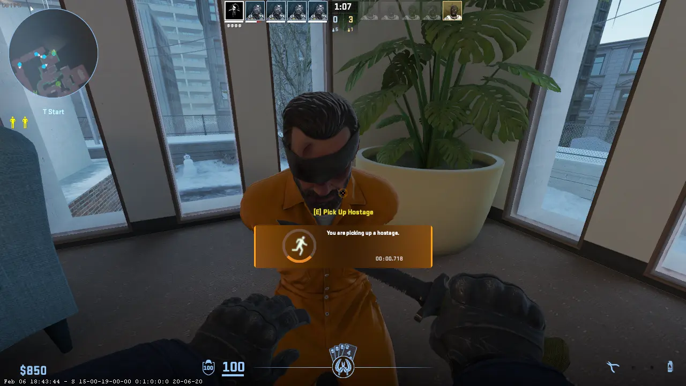
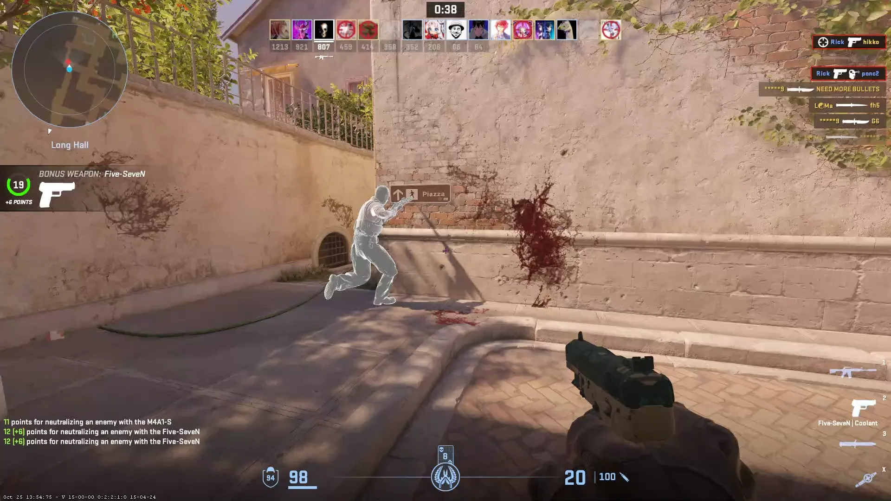

Modo Clásico: Desactivación de bombas (Bomb Defusal)

Este es uno de los modos más populares y emblemáticos de Counter Strike. En él, los jugadores se dividen en dos equipos: terroristas y contra-terroristas. El objetivo principal para los terroristas es plantar una bomba en uno de los sitios designados del mapa y asegurarse de que explote. Por otro lado, los contra-terroristas deben evitar que la bomba sea plantada o, si ya fue colocada, desactivarla antes de que detone. Este modo se juega en rondas, y el equipo que consiga ganar la mayoría de las rondas, típicamente 16, se lleva la victoria. La gestión de la economía para comprar armas y equipo es crucial para la estrategia en este modo.
Modo Rescate de Rehenes (Hostage Rescue)
En este modo, los contra-terroristas tienen la tarea de rescatar a un grupo de rehenes que se encuentran custodiados por los terroristas. Los contra-terroristas deben ingresar a la zona donde están retenidos los rehenes, protegerlos y escoltarlos hasta un área segura para ganar la ronda. Los terroristas, por su parte, deben impedir que los rehenes sean liberados, defendiendo sus posiciones. Es un modo que requiere mucho trabajo en equipo y comunicación, ya que rescatar a los rehenes implica coordinar ataques y defensas en diferentes áreas del mapa.
Modo Competitivo
Este modo es la experiencia oficial para los jugadores que buscan partidas con reglas estrictas y un ambiente más serio y profesional. Se juega en equipos de cinco jugadores y está basado en el modo clásico de desactivación de bombas, pero con ajustes en la economía, el tiempo de ronda y penalizaciones por abandonar o morir. Las partidas se disputan a 30 rondas, y el equipo que gana 16 de ellas es el ganador. Además, el modo competitivo ofrece un sistema de rangos que refleja el nivel y desempeño de cada jugador, haciendo que las partidas sean más equilibradas.
Modo Casual
El modo casual está diseñado para jugadores que prefieren una experiencia más relajada y menos intensa que la competitiva. Aquí no existen penalizaciones por abandonar la partida ni un sistema de economía tan riguroso. Los equipos pueden tener hasta diez jugadores, lo que hace las partidas más caóticas y menos tácticas. También se puede comprar armas sin restricciones y los mapas suelen ser un poco más grandes. Es ideal para quienes quieren divertirse sin preocuparse tanto por la estrategia o el desempeño competitivo.
Modo Deathmatch
El modo Deathmatch es perfecto para practicar la puntería y mejorar la rapidez de reacción. En este modo, los jugadores reaparecen inmediatamente después de morir, y el objetivo es conseguir la mayor cantidad de bajas posibles en un tiempo determinado. No hay rondas ni objetivos específicos más allá de acumular kills. Los jugadores pueden elegir o cambiar armas rápidamente y el ritmo es mucho más frenético que en los modos clásicos. Es un modo muy popular para entrenamiento rápido o calentamiento.
Modo Armas Mortales (Arms Race)
En Arms Race, cada jugador comienza con una pistola básica y debe ir avanzando a través de una lista de armas progresivamente mejores al conseguir bajas. Cada muerte exitosa otorga una nueva arma, y el objetivo final es ser el primero en matar con el arma definitiva, que suele ser un cuchillo especial. Este modo es muy dinámico y divertido, ya que obliga a los jugadores a adaptarse rápidamente a diferentes tipos de armas y estilos de juego mientras compiten por subir de nivel.
Modo Demolición
El modo demolición es una mezcla entre el modo clásico de desactivación de bombas y el modo Arms Race. Los jugadores forman equipos y se enfrentan en rondas cortas, donde el equipo terrorista debe plantar la bomba y el contra-terrorista desactivarla o eliminar a los enemigos. Sin embargo, a diferencia del modo clásico, las armas que se pueden usar están predefinidas y van cambiando cada ronda, lo que añade un elemento estratégico diferente. Es ideal para quienes quieren partidas rápidas con algo de variedad.